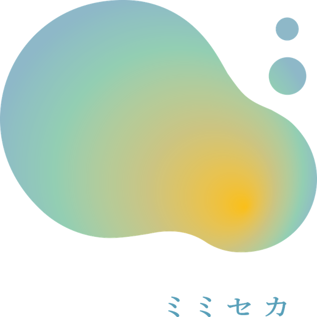
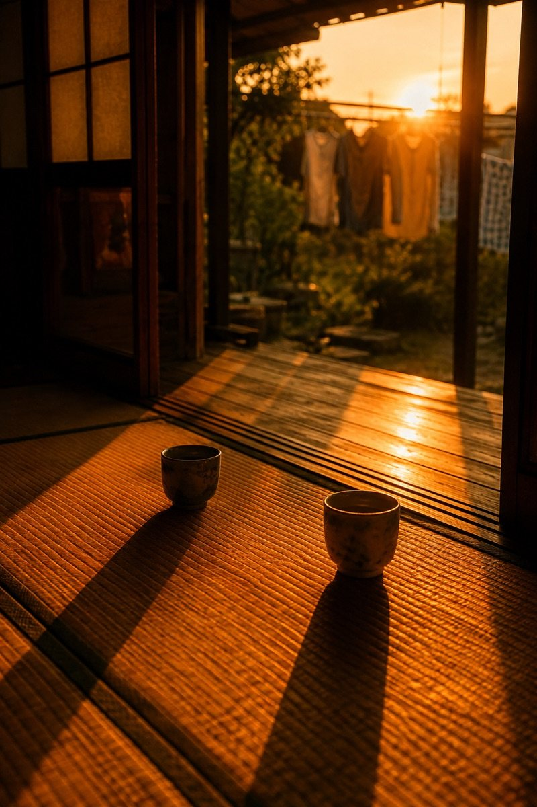

語り
縁側の湯呑みが、ふたつ
西日が畳の目をなぞって、障子の影を長く伸ばしている。開け放した先には、物干しにならぶ洗濯物と、庭の緑。夕陽はもう屋根の高さまで下りて、板の間を金色に染めていた。
湯呑みはひとつが手前に、ひとつが向こうに。さっきまで、誰かがそこに座っていたように。

聴く写真、書かない日記
写真に、声がつく。話すと、日記になる。
見える人にも、見えない人にも、同じ思い出が届くように。
昨日、SNSで写真は何分見ましたか。
——では、自分の写真は。
他人の物語は、毎日たくさん読んでいるのに、自分をふりかえる時間は、いつも後回しになる。
SNSで他人の思い出を見る時間を、すこしだけ、自分の思い出をふりかえる時間に。
写真に、声がついています。目を閉じて聴いても、同じ景色が届きます。

西日が畳の目をなぞって、障子の影を長く伸ばしている。開け放した先には、物干しにならぶ洗濯物と、庭の緑。夕陽はもう屋根の高さまで下りて、板の間を金色に染めていた。
湯呑みはひとつが手前に、ひとつが向こうに。さっきまで、誰かがそこに座っていたように。
「残す」ためのシアと、「いま知る」ためのルペ。どちらも、写真と世界を耳にひらきます。
イベントや公開のお知らせ。新しいものをすこしだけ。
写真を見て楽しむ体験を、見える人だけのものにしない。
——もともと、そこから始まったプロジェクトです。
写真は、目で見るもの。
——そう決めたのは、誰だろう。
見ることをやめるのではなく、見る以外の入口をつくる。
耳から受け取ると、目で見ていたときには、気づかなかった気持ちが、そっと出てきます。
自分の物語が、はじまる。